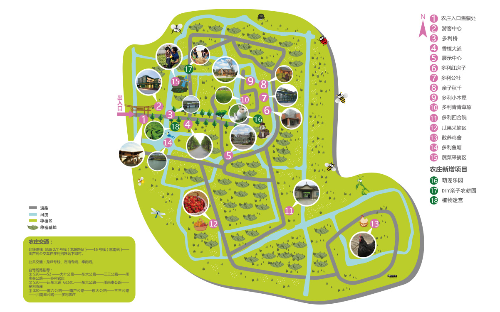

多利农庄
Tony's
farm
多利农庄成立于2005年6月, 2015年度“上海名牌”,是上海著名的有机蔬菜生产企业，在全国拥有九大农业 基地，有机种植总面积3万多亩，十多年来已成功服务数百家优质企业和10万多个家庭。2016年，多利农庄战略 转型升级,中国平安投资控股，全面开启平安好生活。多利从有机蔬菜的先导者正式转型为健康安全食生活方式的提供者。
浦东大团生态园
2005年始建，总占地面积1750亩，位于季风入风口，空气新鲜，土壤肥沃，较少污染的上海市浦东新区大 团镇，历经四年的土壤无害化有机转换及近7千万的河道和灌溉用水改良投入，从源头上保证了有机蔬菜的卓 越品质。其风景优美，拥有加拿大式的木屋会所，世博德国馆原班设计团队打造的全新概念的集装箱接待中心。在 这个有机生态园里，人们可以度假观光、旅游休闲，还可以 现场采摘有机蔬果，体验健康的有机生活方式。
游玩指南
特色介绍
集装箱接待中心
Container Reception Center

有机展示中心
Organic Exhibition Center


小木屋
Gabins

四合院
Courtyard
有机小火锅
Organic Hotpot

有机红颊草莓
Organic Red-cheek Strawberries